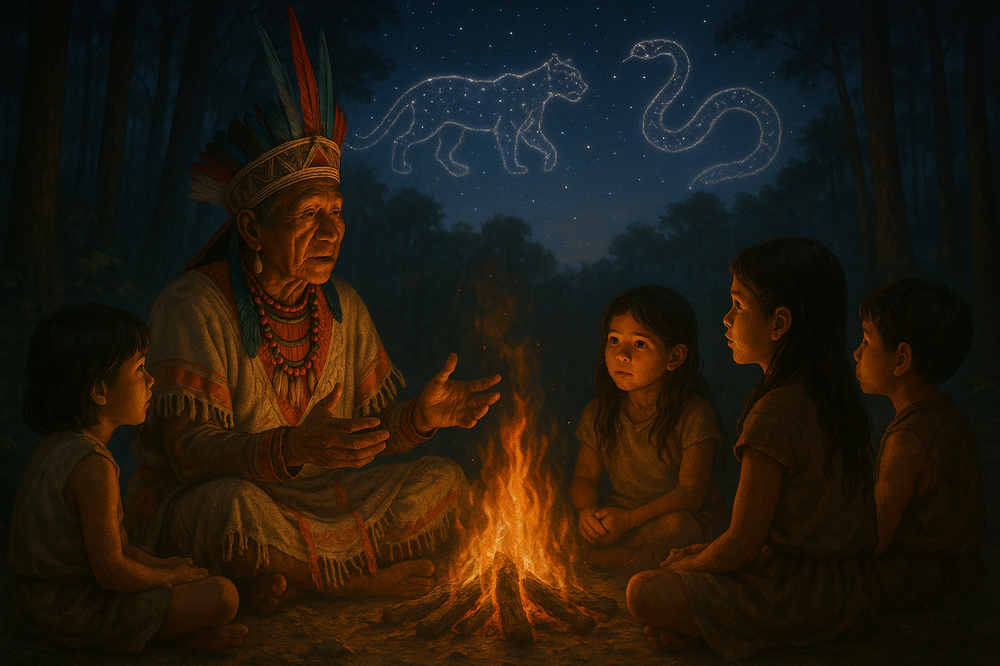
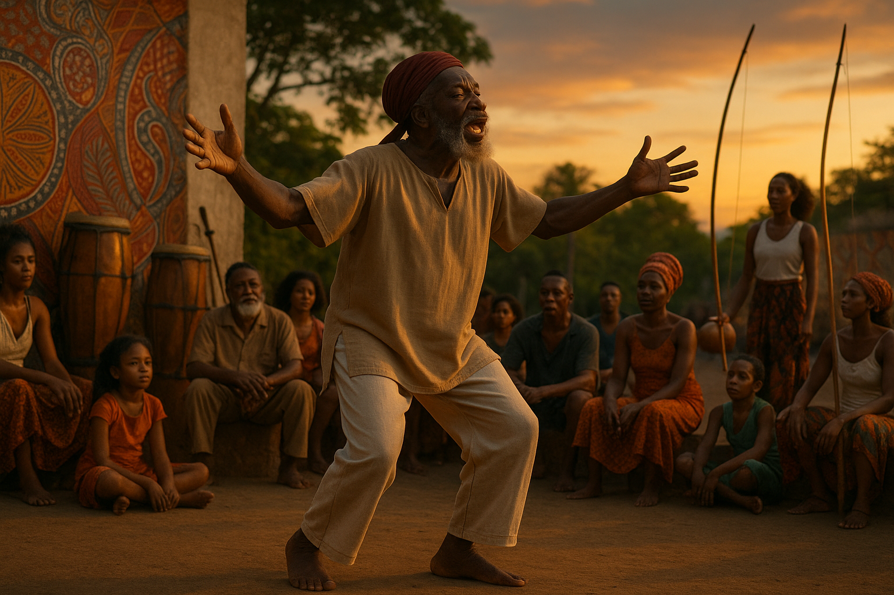

Antes da Escrita: A Tradição Oral na Construção da Literatura Brasileira
A formação da literatura brasileira é um processo complexo que envolve o entrelaçamento de diversas matrizes culturais: a oralidade dos povos indígenas, a herança africana trazida pelos escravizados e a tradição letrada europeia. A compreensão dessa formação exige um olhar que ultrapasse o modelo eurocêntrico tradicional, dando voz às expressões literárias silenciadas ou marginalizadas ao longo da história.
Para os povos originários, como os Tupi-Guarani, os Tikuna, os Yanomami e os Krahô, a palavra oral é sagrada, pois é através dela que se perpetuam os mitos fundadores, os ensinamentos dos ancestrais e os saberes sobre a relação entre humanos, natureza e o espiritual. Os mitos de origem cumprem papel estruturante: por meio deles, transmitem-se explicações sobre a origem do mundo, dos animais, das plantas e das relações sociais.
Um exemplo é o mito de Sumé, presente entre vários povos Tupi, que narra a passagem de um ser civilizador pelo território, ensinando a agricultura, os rituais e o respeito à natureza. Esse mito demonstra uma sofisticada compreensão do equilíbrio ecológico e da transmissão oral como forma de memória coletiva. Além disso, as narrativas não são transmitidas de forma estática: elas mudam conforme o contexto, o ouvinte e o contador, o que denota uma dinâmica narrativa rica e interativa.
Como observa Graça Grauna, escritora e pesquisadora potiguara, “para o povo originário, o conhecimento não é compartimentado como na lógica ocidental; tudo é interligado pela oralidade, que mantém viva a história, a língua e a espiritualidade" (GRAUNA, 2004). Essa perspectiva rompe com o dualismo ocidental entre mito e logos, sugerindo uma outra epistemologia, onde a palavra oral não se opõe ao saber, mas é condição dele.
No campo da literatura, começa-se a reconhecer a potência dessas narrativas por meio da transcrição e publicação de mitos e cantos tradicionais, muitas vezes realizados em parceria com os próprios povos. Autores como Daniel Munduruku e Eliane Potiguara atuam como intelectuais e escritores que reivindicam a validade literária e política dessas tradições. Munduruku, por exemplo, escreve que “a memória do povo não está nos livros, mas nas palavras que correm de boca em boca, através das fogueiras e dos rios" (MUNDURUKU, 2011).
Assim, reconhecer a tradição oral indígena como parte da formação da literatura brasileira não é apenas uma questão de inclusão, mas de revisão crítica do próprio conceito de literatura e de suas hierarquias impostas pelo colonialismo.
A Presença Africana: oralidade, ritmo e ancestralidade
Muitos desses elementos foram incorporados pela cultura popular brasileira, como os contos de animais com malícia e astúcia, tipicamente africanos, presentes em personagens como o Saci ou a Cuca. Também há a tradição dos "pontos cantados" nos terreiros de religiões afro-brasileiras, nos quais se combinam elementos poéticos, musicais e rituais. Tais pontos não apenas evocam entidades como Exu ou Ogum, mas reconstituem uma cosmologia onde a palavra tem poder de convocação e transformação.
Segundo Leda Maria Martins, "a performatividade da memória negra se realiza em formas estéticas onde o corpo é também texto e arquivo" (MARTINS, 1997). Isso significa que o corpo negro é um transmissor de conhecimento ancestral, onde a literatura não está apenas no texto, mas no canto, na dança, na entoação e no gesto. Essa compreensão amplia o conceito de literatura para incluir expressões que transcendem a escrita.
Autores afro-brasileiros contemporâneos têm dado continuidade a essa tradição oral em suas obras, como é o caso de Cuti, Oliveira Silveira, Esmeralda Ribeiro e, mais recentemente, Conceição Evaristo. Esta última propõe o conceito de "escrevivência" como uma escrita que emerge da vivência coletiva negra e da oralidade materna. Como afirma a autora: “A nossa escrita é uma escrita de escuta; não apenas da escuta do outro, mas da escuta de nós mesmos, das vozes que nos habitam" (EVARISTO, 2007).
Outro ponto importante é a musicalidade como elemento estruturante da oralidade africana. O ritmo, a cadência, a repetição e a circularidade são marcas estilísticas que atravessam tanto a fala cotidiana quanto a produção artística. A presença dessas estruturas pode ser percebida em gêneros como o samba, o repente, o jongo, o maracatu e a capoeira, todos profundamente literários em sua dinâmica expressiva.
Portanto, a literatura afro-brasileira não começa com autores letrados do século XX, mas com os griots que sobreviveram ao horror da escravidão e reinventaram o Brasil a partir de suas palavras ritmadas, memórias preservadas e resistências cotidianas. Reconhecer isso é não apenas um gesto de justiça histórica, mas também um convite a reimaginar o que consideramos como "literatura".
Referências
EVARISTO, Conceição. Literatura Negra: uma poética de nossa afro-brasilidade. In: Revista da ABPN, 2007.
MUNDURUKU, Daniel. A sabedoria das palavras. Global Editora, 2011.
MARTINS, Leda. Performáticas da oralitura: Corpo, lugar da memória. Revista do Patrimônio Histórico e Artístico Nacional, IPHAN, 1997.